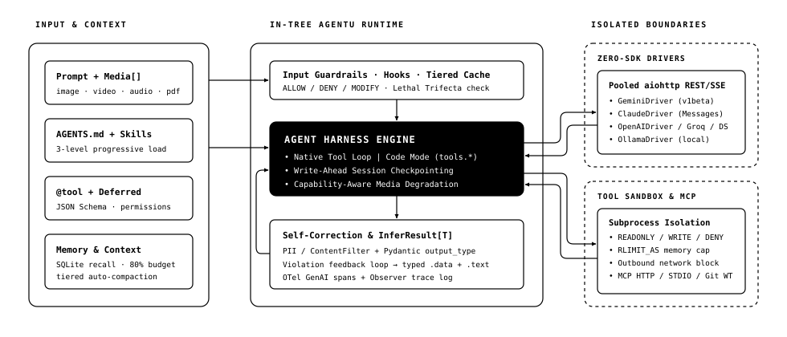

Isolate tools, self-correct failures, and ship agents without SDK bloat.
Subprocess tool sandboxing, single-turn Python Code Mode, typed Pydantic generics, and native REST/SSE drivers for Gemini, Claude, OpenAI, and Ollama — on top of just aiohttp and pydantic.
aiohttp + pydantic)
0 Vendor SDKs Required
~44ms Cold Import
PEP 561 Typed InferResult[T]
Why agent wrappers break in production
Prompt-only frameworks run untrusted tools inside your main event loop, burn 5+ LLM round-trips chaining trivial calls, and pull 40+ transitive SDK packages. agentu treats the harness itself as a systems problem.
Subprocess Sandboxing & Lethal Trifecta
Run tools in child processes with RLIMIT_AS memory caps, hard timeouts, outbound network blocking, and automatic detection when private reads + untrusted inputs + external comms combine.
Code Mode Execution (tools.*)
LLMs have trained on billions of lines of real Python. Let the model write one restricted Python script calling your typed tools in a single round-trip instead of fragile multi-turn JSON ping-pong.
Closed-Loop Self-Correction
When PII guardrails trip, Pydantic output_type validation fails, or Code Mode throws a KeyError, agentu feeds structured error diagnostics back to the model automatically.
Simulate the runtime loop
Toggle real harness configurations below to inspect how agentu alters execution traces, enforces isolation boundaries, and validates outputs.
Request lifecycle & isolation boundaries
Solid enclosures execute deterministically inside your Python process; dashed enclosures cross network or OS subprocess boundaries.

Zero-bloat footprint
Pay only for what you import. Everything outside the two-dependency core loads lazily via PEP 562 module attributes.
| Dimension | agentu Core |
Typical Heavy Agent SDK |
|---|---|---|
| Install Footprint | aiohttp + pydantic (2 packages) |
35–70 transitive provider & telemetry packages |
| Provider Routing | Built-in native REST/SSE drivers (gemini-*, claude-*, gpt-*, ollama/*) |
Separate vendor SDK per provider |
| Tool Execution | In-process OR OS subprocess sandbox (RLIMIT_AS + timeout + net block) |
Unrestricted in-process execution |
| Tools + Structured Output | Native composition → validated InferResult[T] with auto-retry |
Often mutually exclusive or manual two-step wiring |
| Video / PDF on Text Models | Automatic Markdown transcript degradation (agentu[media]) |
Hard 400 API error on unsupported MIME parts |
Production patterns in 10 lines
Zero-Config Tool + Typed Output
PEP 561 Typedfrom pydantic import BaseModel
from agentu import Agent, tool
class Quote(BaseModel):
sku: str
total_usd: float
@tool(readonly=True)
def fetch_price(sku: str) -> float:
"""Lookup unit price in USD."""
return 1299.0
agent = Agent("sales", model="gemini-2.5-flash").with_tools([fetch_price])
res = agent.run("Quote 2 units of X1-CARBON", output_type=Quote)
print(res.data.sku, res.data.total_usd)
Subprocess Sandbox + Guardrails
Isolatedfrom agentu import Agent, PII, ContentFilter
agent = (
Agent("ops", model="claude-sonnet-4-20250514")
.with_sandbox(
read_tools=[query_metrics],
write_tools=[write_incident_note],
timeout=8,
max_memory_mb=256,
allow_network=False,
)
.with_guardrails(output_guardrails=[PII(), ContentFilter()], max_corrections=2)
)
res = await agent.infer("Summarize today's error spike")